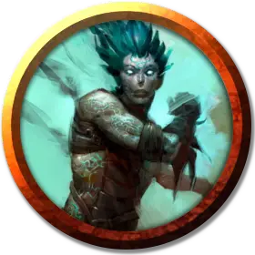

Шоалар Куандерил
Shoalar Quanderil
Средний Гуманоид (Водный дженази), законно-злой, именной НИП

Класс Доспеха 10 (13 с доспехами мага)
Хиты 60 (8к8 + 24)
Скорость 30 футов, плавая 30 футов
| мод | спас | ||
|---|---|---|---|
| СИЛ | 11 | +0 | +0 |
| ЛОВ | 12 | +1 | +1 |
| ТЕЛ | 16 | +3 | +3 |
| мод | спас | ||
|---|---|---|---|
| ИНТ | 14 | +2 | +2 |
| МДР | 10 | +0 | +0 |
| ХАР | 17 | +3 | +3 |
Навыки Магия +4, Обман +5, Проницательность +2, Убеждение +5
Сопротивление урону кислота
Чувства пассивное Восприятие 10
Языки Общий, Акван
Опасность 4 (1100 опыта)
Бонус мастерства +2
Особенности
Амфибия. Шоалар может дышать и воздухом, и под водой.
Врождённое колдовство. Базовой характеристикой Шоалара является Телосложение (Сл спасброска от заклинаний 13, +5 к атакам заклинаниями). От природы он владеет следующими заклинаниями:
• Неограниченно:формование воды[shape water]
• 1/день:сотворение или уничтожение воды[create or destroy water]
Использование заклинаний. Шоалар является заклинателем 5-го уровня. Его базовой характеристикой является Харизма (Сл спасброска от заклинаний 13, +5 к атакам заклинаниями). Он знает следующие заклинания чародея:
• Заговоры (неограниченно):ядовитые брызги [acid splash], леденящее прикосновение [chill touch], дружба [friends], фокусы [prestidigitation], луч холода [ray of frost]
• 1 уровень (4 ячейки):маскировка[disguise self], доспехи мага [mage armor], волшебная стрела [magic missile]
• 2 уровень (3 ячейки):удержание личности[hold person], туманный шаг [misty step]
• 3 уровень (2 ячейки):приливная волна[tidal wave]
Действия
Кинжал. Рукопашная или дальнобойная атака оружием: +3 к попаданию, досягаемость 5 фт., или дальность 20/60 фт., одна цель. Попадание: колющий урон 3 (1к4 + 1).
Описание
Вряд ли кто-нибудь меньше подходит на роль злобного члена жестокого культа, чем Шоалар Куандерил. Тем не менее этот упитанный водный дженази, наделённый весёлым нравом и едким чувством юмора, — не кто иной, как капитан пиратского судна, ответственный за грабительские набеги по всему Побережью Меча, и высокопоставленный культист Сокрушительной Волны. Шоалар считает, что сила, даруемая Ольгидрой, —это лишь инструмент, который он использует для собственного обогащения.